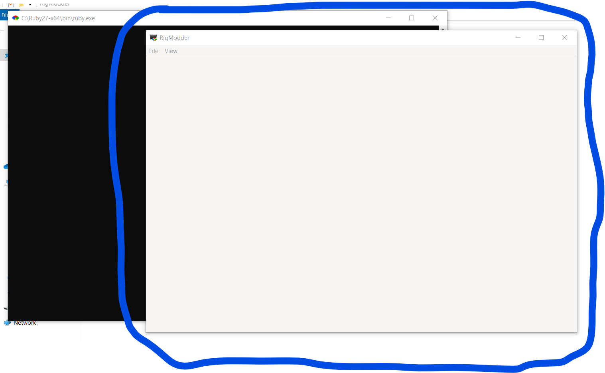

Downloading the app now will look advnaced to the basic computer user. Although, it can get easy once you follow the instructions. Its in source code right now because it is still in development. In other words, it is not the final product and it is avaliable for any app tester. In two seperate paragraphs, you will learn how to download the app in two different methods.
The first way of obtaining the software is by downloading it as a ZIP archive via GitHub. Firstly, go to this link here. Second, press on the green dropdown/button that says "Code". Then click "Download ZIP". After that, go to whereever your file has been downloaded locally inside your computer. Most browsers, like Chrome, have a selection to open the folder to where the file is located.
Go to your current file explorer and click a button that says to unzip or extract the zip file. Before you, extract the zip file, create a directory named "RigModder". After that you can move the zip file to the folder and extract it from there.
After it got extracted (or unzipped), find the file called rm-main.rb, If you are on the Windows platform, you can just double-click on the file itself and you will see a console window and then the main window come up afterwards.
git cloneFirst, you want to go to the github repo here. Then you would want to copy the link from the code dropdown. Then install and download Git and open its command-line interface., in this instance we will use their default command line software.
Lastly, go to the git command line and paste this command to its terminal --->
git clone 'https://github.com/shinymodman/RigModder.git'
BUT, if you want to use the Windows or Linux console, then type in this: If the shell is not on the RigModder directory, type
For Windows (CMD):
cd 'C:\Users\'type your username here'\Downloads\RigModder'
For Linux (Bash):
cd ~/Downloads/RigModder
The last and final step to opening the app via the command line is to use the ruby command.
To do this, you need to ensure that you have an installation on ruby 2.7.5+ with the devkit. Just to warn that, I have not tested RigModder on versions older than 2.7.5 but there is a chance that it will not work. Afterwards, type in ruby rm-main.rb and it will load at least for a minute.
When it is finished, you should see the RigModder main window pop up like this:  This means that you are all done with the installation and now can use the app as much as you like!